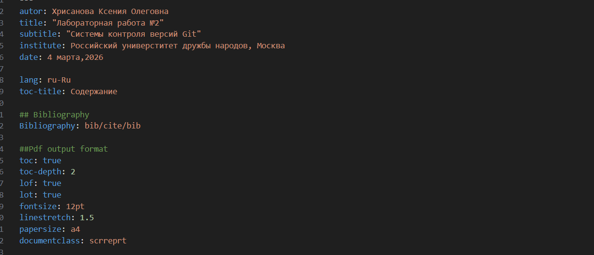
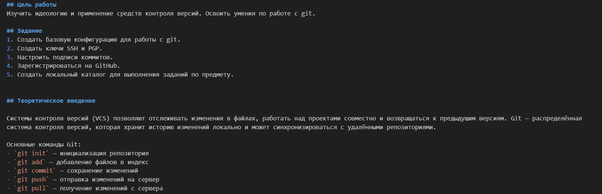
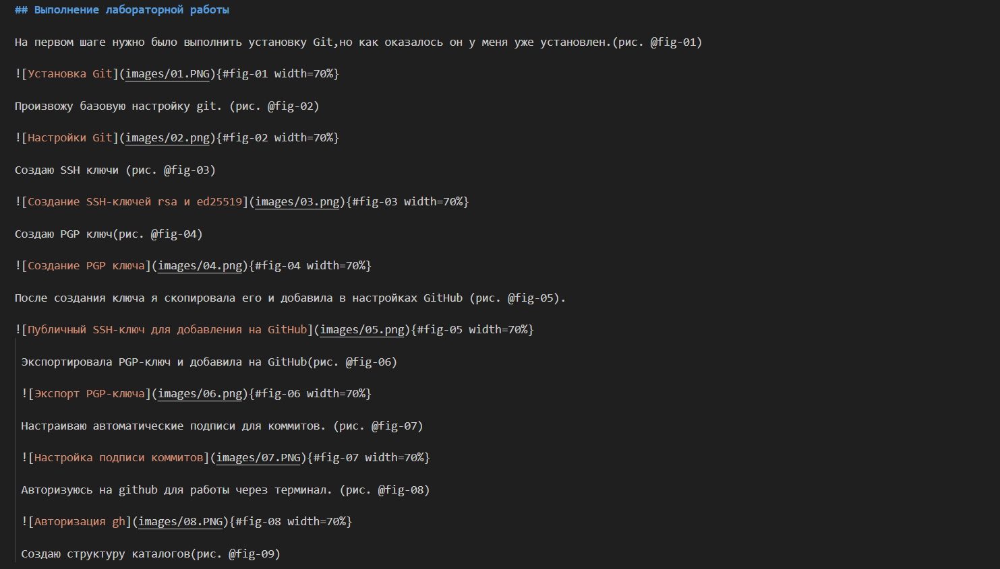
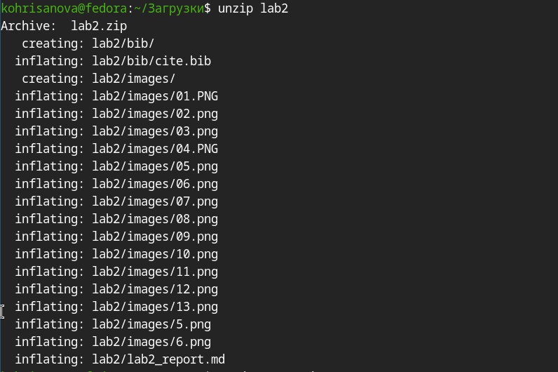
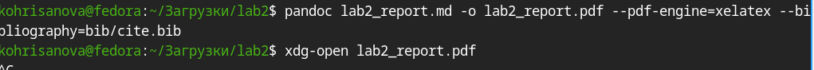
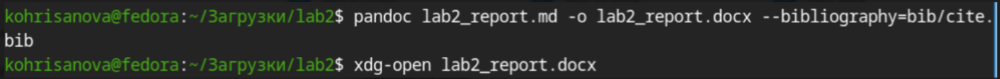

Научиться оформлять отчёты с помощью легковесного языка разметки Markdown.
1.Сделать отчёт по предыдущей лабораторной работе (№2) в формате Markdown.
2.В качестве отчёта предоставить файлы в 3 форматах: pdf, docx и md (в архиве, содержащем скриншоты, Makefile и т.д.)
Чтобы создать заголовок, используйте знак ( # ). Чтобы задать для текста полужирное начертание, заключите его в двойные звездочки. Чтобы задать для текста курсивное начертание, заключите его в одинарные звездочки. Чтобы задать для текста полужирное и курсивное начертание, заключите его в тройные звездочки. Блоки цитирования создаются с помощью символа >. Неупорядоченный (маркированный) список можно отформатировать с помощью звездочек или тире. Чтобы вложить один список в другой, добавьте отступ для элементов дочернего списка. Упорядоченный список можно отформатировать с помощью соответствующих цифр. Чтобы вложить один список в другой, добавьте отступ для элементов дочернего списка. Синтаксис Markdown для встроенной ссылки состоит из части [link text] , представляющей текст гиперссылки, и части (file-name.md) – URL-адреса или имени файла, на который дается ссылка. Markdown поддерживает как встраивание фрагментов кода в предложение, так и их размещение между предложениями в виде отдельных огражденных блоков. Огражденные блоки кода — это простой способ выделить синтаксис для фрагментов кода. Внутритекстовые формулы делаются аналогично формулам LaTeX. Преобразовать файл README.md можно следующим образом: 1 Pandoc README.md -o README.pdf или так 1 pandoc README.md -o README.docx Можно использовать следующий Makefile 1 FILES = (patsubst(wildcard .md)) 2 FILES += (patsubst(wildcard .md))






В ходе выполнения данной лабораторной работы я научилась оформлять отчёты с помощью легковесного языка разметки Markdown.